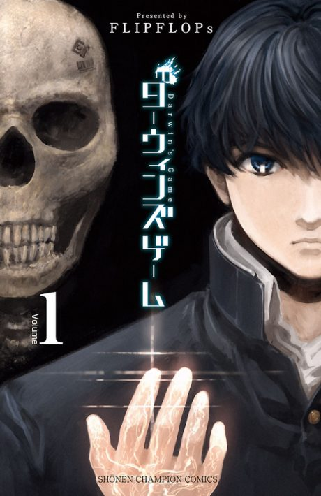

Darwin's Game
ダーウィンズゲーム
Kaname gets an invitation to a mobile game and finds himself in a real fight to the death between people with special powers.
After the anime, read the manga from Chapter 30.
7.0AniList score
—Animeter, no votes yet
11episodes
Rate it or report where you stopped
Anime finished. Where does the manga pick up?
Start at Chapter30
The anime ends with chapter 29, so start at chapter 30 (volume 8), which opens the Police Investigation arc. The manga is finished at 125 chapters.
129125 end
Season 1Start reading here